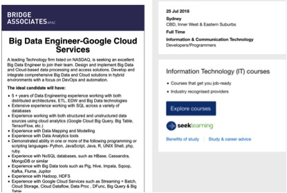

Personal Information:
Ziyan Zhou
S3615546
China, graduate from a Canadian International High School and now studying my Bachelor degree of Finance and Economics
Language: Chinese
Hobby: I like playing computer games (especially video games). I collect a few gaming machines (all series of Play Station and a few Nintendo) and also a few video games. Favorite Games: Zelda
Interest in IT:
My interest in IT is mainly derived from the first computer that my father bought to me. My interest in IT is mainly in the area of programming because I hope that I can learn a few of professional IT skills so as to be eligible for making some interesting software and applications (such as some useful applications in daily life and some interesting games on the mobile device). My roommate when I was in my high school inspired my interest in the IT area since he is an IT guy and taught me a few basic IT knowledge and skills which made me start being interested in IT.
The reason why I chose RMIT is because it is a very top-rated university in Melbourne that is really professional in the IT area. Also, the other reason is that one of my brothers also graduated from this university.
During my studies, the thing that I expected to learn is mostly the programming skills since I am quite interested in this area. I wish that I can become professional in programming and become a programmer. Then I can found a company that design and make some kinds of interesting applications.
Ideal Jobs:
https://www.seek.com.au/job/36798873?type=standard
The position of this job is basically designing and implementing the big data and cloud-based data processing and access solutions, which requires the employees to make big data and cloud solution in different situation. This job is quite attractive to me as it provides a quite considerable salary and also big data development and cloud service both have a quite bight future. To apply for this job, there are a few skills and experience that I have to achieve, such as 5+ years of data engineering experience, experience of working with structured and unstructured data using cloud analytics. Also, I have to learn the skills such as Data Mapping and Modelling, and have to learn how to use the data analytic tools, such as NoSQL database, big data tools, Google Cloud Services. There are actually not many skills that I have obtained since I am quite new to this area. I have never learned how to use the tools for programming and website and data designing. In order to achieve these skills, I plan to learn some basic skills such as programming is the following years in RMIT, such as Java and C++ languages that are commonly used in these areas. Also, I will learn the skills such as big data design (such as Pig, Hive, Impala) and analytic tools by myself from websites. Meantime, I will go to some IT companies for internship and maybe find a formal job in order to gain more experience and learn more skills from colleagues since this job requires the appliers have more than 5 years of data engineering experience. Personal profile: Myers-Briggs test shows that I am a mediator personality, which means that I am a true idealists, always looking for the hint of good in even the worst of people and events, searching for ways to make things better, and I am perceived as a calm, reserved, or even shy person. These results reveal that I will seldom provides any arguments towards my partners since I am quite calm and reserved. Also, I will not always show my dissatisfaction or different ideas to other people in my group since I usually focus on the good things instead of even the worst part. So when forming a team, I will tell my group members about this and requires them to encourage me more fused into the work that we are doing, and also make the team more cohesive and harmonious since I am a person always neglects the bad part and seldom provide any useful ideas. The learning style test reveals that I am a visual learner, which means I prefer the information and knowledge presented in a written format or pictures and diagrams. When working in a team, I may create some graphic organisers such as concept maps and diagrams to memorise and understand the key points and concepts very well. When forming a team, I prefer some members who have the similar learning habits like me so that we can use some graphic organisers and symbols to better understand and explain the concepts and ideas. The result of the big five personalities test is: openness to experience (5% very low) shows that I am a traditional and conservative person; Conscientiousness (53% middle) reveals that I am comparatively conscious when making decisions; extraversion (29% low) means that I am a reserved and serious guy; Agreeableness (32% middle) reveals that I usually behave calmly and sometimes compassionate about the weak or poor guys; Natural reactions (59% middle) shows that it is generally not easy for me to get upset in stressful situations. When I am in a team, I usually speak a few since I am a conservative guy, which means I will not talk too much about the ideas. However, I am a hardworking guy even in a tough situation. Although it is stressful, I will still work hard and stay optimistic. When forming a team, I will choose to stay with someone that are ambitious and active since they can stimulate the atmosphere of the whole group of talking and sharing ideas. Meantime, I hope my partners to be easy going and can accept my silence. Hopefully, they can give some suggestions and make me fuse into the whole group more easily since I do not talk too much and am quite conservative. Project ideas: Overview: My project is about creating a smart system with AI technology. The whole system can totally control all of the electronic devices and most importantly can understand the ideas and instructions of the master then follow the command to make response, such as report the weather, taking some physical things to some places (this needs the help of the robots in the house), making some calls and play some music and video if the master wants, etc. Meantime, it can also be remote-controlled by people using voice when they are outside, and they can check the status of the whole system at any time and place. Motivation: I derived this idea mainly from a science fiction film called Iron Man. In the film series of Iron Man, Tony Stark has a smart AI system, Jarvis in his house and he can talk to and send command to Jarvis when he is outside. This gives me some ideas of making such a smart system. I believe it will be interesting and useful since people can use this system to interact with the AI and the system can help me live easier since I do not have to do a lot of things by my own, which I think this is what most of the people dreams in their daily life. Also, disabled people have strong demand in this product since many things can be done by this system. Description: The aim of this project is to create more possibility for human beings to try to be as lazy as possible since there will be a large number of things that can be done and processed by this AI system. Being different from the AI system in Iron Man, the project mainly sends and receives instructions and makes a series of response mainly for daily life instead of being made for creating and fixing the armor and weapons. The whole project will be separated into 3 parts: hardware, system, mobile application. Firstly it needs some physical robots or obtain some smart devices to receive and follow the instructions (it can be a robot or an electronic device that can receive command and give response), such as moving stuff, open the window, and clean the house; Secondly, it needs to make a smart system that can interact with the human beings by voice so as to send and receive the instructions and then send the instruction to the relative robots or some electronic devices to make final response. Last but not least, there must be using some software that can connect and interact with all of the electronic devices, which means it needs a terminal to control and check the whole system. So we also have software and a physical stuff (it can be a smart phone or a smart device) that can be used to talk to the system and make the system give some response (something just like Siri). More specifically, this system is more likely to be a mobile remote-control system that can recognize and receive the instructions and then send to the robots and smart devices to complete the order. For example, it the master is outside and he wants the system to tell him about today’s weather. At this time, he can just talk to the smart device with an application or software (something just like the function of Siri) and ask it about the weather, the system can provide relative information about the weather to the master. At this time, the master reminds that he forgot to close the window at home. So he can just send a voice message by just talking to the system in voice, such as saying ’please close the window for me now’, and the system can recognize what he said and then close the window before it rains. If the master is now at home and got injured in his legs in a car accident and lying on the bed, the system can also provide a lot of help. If the master wants some water, he can just talk to the system, such as saying ’please give me a bottle of water’, and the system can recognize what he says and send the message to relative robots at home. Then the robot (with wheels) can go filling a bottle of water and bring it to the master. Tools and Technologies: In this project, we can use some physical devices to realize this idea such as Raspberry Pi and some micro robots. These physical devices can make the correspondent actions (such as sweeping floor, close window) after they receive the instruction after we programming and for them. And also we need a device that always stays with us that can understand our language and translate the language into the instructions toward the physical devices in order to make a series of actions. Meantime, some software or applications on computer or mobile phones that monitor and control the whole system are also indispensable. Skills Required: For hardware, we need to learn and know how to use some micro robots since they are controlled and receive instructions to make some correspondent actions, which means we need to learn to program the robots in the relative software and make sure they can be controlled by the system. Also, we need to learn how to make the robot act what we want them to do in a physical way, which needs us to learn basic physical knowledge of leverage and transmission. For software, we need to know how to use programming language to program the devices and the robots, such as Java, C language, C++, etc. Outcome: If this project becomes successful, the most obvious outcome is that people’s life will be much easier than before and it can also be very helpful for those who are disabled. A lot of basic daily affairs will just be done by the smart AI system with the process of receiving voice, voice recognizing, and sending it to the system- activating the robot and giving response. The impact of this project will be quite large to people’s daily life since the technology not only just provides data and information but also using the instructions to make actions people want, which largely facilitates people’s life. Micro Credential-Application Package
